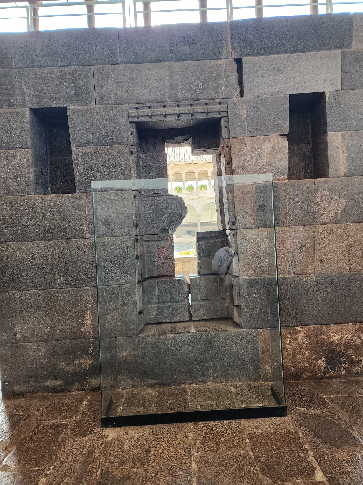
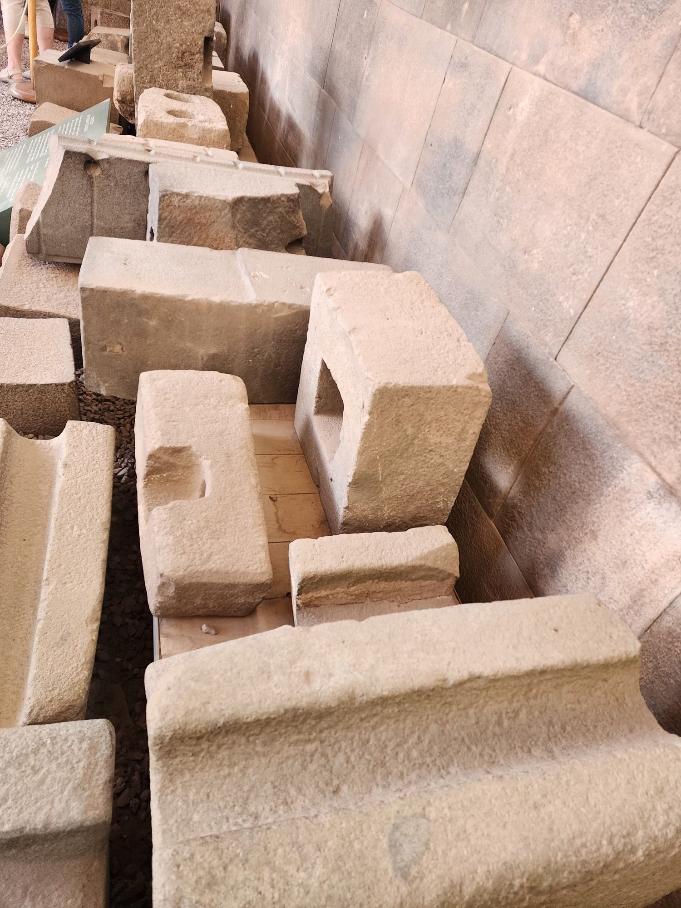
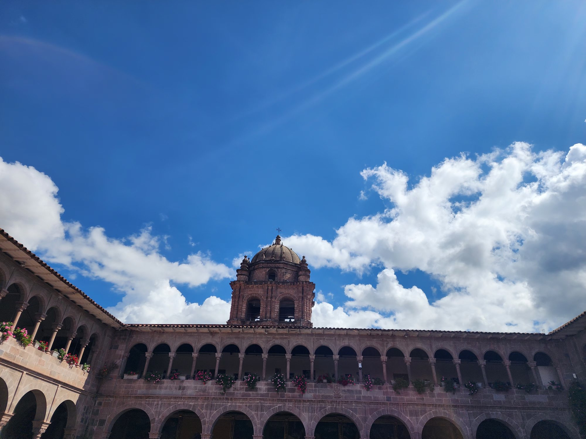

Ten minutes' walk southeast of the Plaza de Armas. I am standing in front of Coricancha (Coricancha).
More precisely, I am standing on top of Coricancha. Because this building is doubled. Below: the Inca stone wall. Above: the Spanish church. The most concentrated colonial space in this city.
The church's official name is the Convent of Santo Domingo (Convento de Santo Domingo). The walls are whitewashed, and Baroque windows and a bell tower reach toward the Andean sky. Spanish-style arches, with images of the Virgin Mary inside. Seen from outside, it is an ordinary colonial-era Catholic monastery. There are dozens of such buildings in downtown Cusco.
But look at the lower part of the building, and something entirely different appears. A massive andesite block wall, exposed without whitewash. Polygonal stones interlocked with absolute precision. The same masonry technique I had seen at Sacsayhuamán. The corners rounded, the seams gone. A 500-year-old wall that looks as clean as if it were built yesterday.
This is the original Coricancha. The supreme temple of the Inca Empire. The name means "Garden of Gold."
I lay my hand on it. The surface of the stone is cold and smooth. With my fingertips I trace the seam between stone and stone. There is no gap. Five centuries of wind, rain, and earthquakes, and not a sheet of paper could slide between them.
And just above, on top of this Inca wall, rests the Spanish arch. White lime and red tile. The stones of two civilizations folded into a single wall. Below, an Inca that has been silent for five hundred years. Above, a Spain that has been making noise for five hundred years.
One astonishing fact about this building. 1650, 1950, 1986 — Cusco endured three major earthquakes, each greater than magnitude 6.0.¹ Each time, the upper floors of the monastery the Spanish had raised collapsed or were severely damaged. The plaster fell, the tiles broke, the bell tower tilted. The Spanish building had to be rebuilt. And it has been rebuilt several times.
But the lower Inca courses were untouched.
There is a photograph from the May 1950 earthquake. The upper monastery looks as though it had been bombed, and yet not a single stone of the Inca wall beneath had shifted.² Archaeologists explain this by the seismic resilience of Inca masonry. The stones interlock; under tremor they actually lock more tightly. By contrast, Spanish buildings, with stones bound by mortar, are vulnerable to shaking.
The contrast is so vivid that in Cusco it has become a symbolic story. Colonial structures, when they shake, fall. Inca stones, even when shaken, remain.
This chapter unfolds that symbol. And one thing more — it shows that colonial rule operated in space through two distinct devices. One: dismantling the Inca building, or covering it. The other: erecting an entirely new Spanish-style building, but entrusting its interior art to the hands of Indigenous artisans. The first is spatial seizure. The second is colonial fusion. The two devices differ in period and in logic. But they were the simultaneous workings of the same empire.
In this chapter I walk both devices in turn. First Coricancha — destruction and overwriting. Then a village forty minutes from Cusco by car, Andahuaylillas — a newly built church whose interior carries the hybrid art left by Indigenous artisans. Stone laid upon stone, and the lower stone remains; inside a Spanish building, the Andes hide and sing. Together, the two places show the substance of colonialism.

What did Coricancha look like in its original form? Fortunately, several Spanish chroniclers recorded it vividly. Because they had seen it with their own eyes.
Pedro Cieza de León visited Cusco in the 1540s. What he saw was a Coricancha that had already been partially looted, but he recorded the original form as testified to by some Inca nobles.
"The entire walls of the temple were covered in plates of gold. A finger-joint thick, a hand-span wide, the height of a man. There were hundreds of such plates. There was a sun made of gold. So large that it filled a whole wall of the temple. In the garden there were life-size stalks of golden corn. Even the leaves were made of gold. There were also llamas of silver. Mother llamas with their young. All arranged through the garden. When the evening light entered the temple, the walls and the garden seemed to be on fire."³
Garcilaso de la Vega's account is more detailed. He was born of an Inca princess and a Spanish conquistador. As a child in Cusco he grew up listening to stories from his Inca noble relatives. What he conveyed:
The Hall of the Sun: the heart of the temple. On one wall hung a colossal golden sun. Its face was that of a man, with rays of light reaching outward in every direction. Each day, the high priest came before this sun to perform the rites.
The Hall of the Moon: beside the Hall of the Sun. Here was a moon of silver. The mummies of the Inca queens were laid here. It was believed that the dead queens rested under the protection of the moon.
The Hall of Lightning: Cuychi. The god of lightning, thunder, and the rainbow.
The Hall of Stars: Coillur. The stars were considered handmaidens of the moon.
The Hall of Ancestors: here were laid the mummies of successive Inca emperors. The mummies wore the same clothes they had worn in life and received the same food. At festivals they were brought out into the plaza and seated together with other members of the royal family. Death was the continuation of life.
And the garden. The ceremonial garden outside Coricancha. This was the most astonishing of all. Every plant and every animal was made of metal. Fields of corn in gold. Potato roots in silver. Alpacas in gold. Birds in silver. Even, it is said, insects and butterflies. Decisive evidence of how exquisite the Inca artisans were.⁴
All of this was melted down after 1533.

In the gathering of Atahualpa's ransom, vast quantities of gold and silver were sent from Cusco to Cajamarca. A great portion of it came from Coricancha. Pizarro's men tore off plate after plate of Coricancha's gold and carried them north.
After 1533, when Pizarro's main force took Cusco, the residual plunder was carried out. Every metal artwork still inside Coricancha was gathered. The mummies were dragged out from their chambers. The gold and silver that adorned them were stripped away.
All of it was recast into ingots of gold and silver. The reduction of form to mass. The fingertip wisdom of the Inca artisan dissolved into a uniform lump of metal. This is the essence of modernity.
A golden ear of corn that an Inca artisan had labored decades to make — its very leaf-veins engraved into intricate art — could be melted down in ten minutes in a furnace into a uniform ingot. That ingot would be carried to Spain, enter the royal treasury, fill the vaults of European bankers, circulate through the Netherlands and Genoa, and finally become the capital of further colonial expansion, invested in the Dutch East India Company, used to make still more colonies.
This entire economic chain began with the erasure of the Inca artisan's fingertip wisdom.
This is not a single event. It is the beginning of a logic that became an economic system. What I want to emphasize here: the art of a civilization disappears the moment it becomes money. And the art that has disappeared is never made again.

The structure of Coricancha itself was not, at first, taken apart. Why? Because the Inca walls were too perfect to break. Spanish builders tried, but even days of work by dozens of stonemasons could barely pry out a single block. The cost was prohibitive.
So they chose a different strategy. To use the Inca walls as a foundation, and lay a Spanish building on top.
From 1534, construction of the Convent of Santo Domingo began, under the Dominican Order. The upper portion of Coricancha was demolished — more precisely, after the gold had been stripped, the remaining stonework was partly dismantled — and on top of it rose European-style arches, cloisters, and a church. It was completed in the 1540s.
The symbolic message contained in this structure is unmistakable. Christianity covers Inca faith. The Inca temple has been destroyed, but the spiritual authority of the ground remains. If you place a new god in the most sacred place, you can seize that spiritual authority. Why did the Inca come to this site to pray? Why was this point regarded as the navel of the cosmos? That authority was what the church appropriated.
This is an extension of the logic of Cajamarca. As they had passed Atahualpa's crown to Manco Inca to borrow legitimacy, they raised a cathedral over the foundations of Coricancha to borrow spiritual legitimacy. A classic technique of destroying and absorbing at the same time.
After Manco Inca's great rebellion of 1536, Spain's policy changed. They identified Sacsayhuamán as a strategic threat. The fact that the Inca army had used the fortress during the rebellion was decisive. After suppressing the great rebellion, Viceroy Francisco de Toledo ordered: dismantle Sacsayhuamán systematically.
The aim was twofold. First, to remove the symbol of Inca military power. Second, to secure building material for the colonial city of Cusco.
Throughout the sixteenth century, Sacsayhuamán became a quarry. Day after day, under the supervision of Spanish foremen, Indigenous laborers dismantled the megaliths. The largest stones were too heavy to move. So they were left. But the smaller stones — though "small" by Inca measure, still on the order of several tons — were systematically transported away.
Where? Into downtown Cusco. Cathedrals, monasteries, mansions, public buildings. Most of the major architecture of sixteenth-century colonial Cusco was built with stones from Sacsayhuamán.⁵
The Cathedral of the Plaza de Armas (Catedral de Cuzco) — begun in 1559, completed in 1654 — is a representative example. The foundation and lower walls of this cathedral were built with stones taken from Sacsayhuamán. The same is true of the Iglesia de la Compañía de Jesús (the Jesuit church) beside the cathedral. The old mansions along Loreto Street, the building that houses the Casa del Inca restaurant — all of these contain stones from Sacsayhuamán.
Within a single century, a great part of the original fortress had vanished. Scholars estimate that, by conservative reckoning, half — and perhaps more than two-thirds — of its original mass was lost in this process of dismantlement.⁶ The colossal Sacsayhuamán we saw in Chapter 1 is only the twenty to fifty percent that could not be taken apart.
In other words, when I climbed Sacsayhuamán and lost my words before its megaliths, I was looking at less than half of the original. How great must the intact Sacsayhuamán have been? It is hard to imagine.
Today Cusco is called by tourists "one of the most beautiful cities in the world." A landscape of colonial Baroque architecture spread under the Andean sky. Red-tile roofs and whitewashed walls. Stone streets and arches. Captured in photographs, it looks like a UNESCO promotional poster.
There is a paradox in this beauty.
Many of the stones of colonial Cusco came from Inca buildings. The polygonal stones at the base of the walls — the very stones tourists photograph as "Inca heritage" — were largely moved from other Inca structures. From Sacsayhuamán, from dismantled Inca noble houses, from broken temples.
So one can say: "The beauty of Spanish Cusco was built upon the corpse of Inca Cusco." This is not a metaphor. It is a physical fact.
To say this makes those who work in the tourism industry uncomfortable. Cusco's identity is packaged as "the harmony of colonial and Inca." The narrative of "a unique city born of the meeting of two civilizations." But this narrative hides the substance of that meeting. The meeting was violence. A "meeting" by way of one side dismantling and absorbing the other.
This structure must be seen clearly. Otherwise we will fail to recognize the same structure repeating itself in the present.
For a Korean reader, one juxtaposition will come immediately to mind.
In 1926, the Japanese Empire completed the Government-General Building of Joseon (Chōsen Sōtokufu) in front of Gyeongbokgung Palace. The Gwanghwamun gate was dismantled and moved aside, and in its place rose a massive European-style stone building. This placement was deliberate. Gyeongbokgung symbolized the legitimacy of the Joseon royal house. In front of it, the Japanese administrative building blocked the view. To enter Gyeongbokgung one had to pass through the Government-General. Visually, and symbolically, the structure imprinted upon the inhabitants every day that Joseon lay under Japanese rule.⁷
This is the same logic as raising the Convent of Santo Domingo upon Coricancha. To lay one's authority upon another's sacred place. Not destroying but absorbing. To inscribe a hierarchy in the minds of those who see it daily.
And in 1995, Korea dismantled the Government-General Building. This was not a simple act of demolition. It was "an act of taking back the stones." A political choice to recover symbolic space.
Yet much remains. The main building of Seoul National University was originally Keijo Imperial University. The Bank of Joseon (now the old main building of the Bank of Korea) is also a structure of the colonial period. Many government buildings, schools, and corporate headquarters in Korea stand upon the legacy of Japanese imperialism. Physically, institutionally, and culturally.
How is Korea to deal with this legacy? It cannot all be dismantled. But it cannot simply be dismissed as "beautiful modern architecture." Cusco faces the same question. And every nation with a colonial past must find an answer.
To remember the stone beneath the stone. This is not the answer, but it is a beginning.
The execution of Túpac Amaru (1572) was not an end but a new beginning. Viceroy Francisco de Toledo, having ended the Inca's political resistance, turned his aim to their spiritual resistance. His policy is known as the Extirpation of Idolatry (Extirpación de Idolatrías).⁸
Extirpation was not simple "conversion of pagans." It was a systematic, organized, long-term program of cultural erasure.
The targets were various. First, huacas — places, things, and beings considered sacred in Inca religion. These included particular springs, rocks, mountains, trees, ancestral mummies, astronomical markers. There were hundreds of huacas in the vicinity of Cusco alone. Second, mummies — the ancestral mummies of Inca noble lineages. They were brought into the plaza on certain days to take part in ceremonies. They were treated as members of the family. Third, artworks — pottery, textiles, metalwork, ceremonial vessels. Fourth, ritual instruments — musical instruments, sacrificial vessels, divination tools. Fifth, oral traditions — songs, prayers, myths, genealogies.
All of this became the object of destruction.
What is striking is that the destruction was recorded. And recorded proudly.
The Jesuit Father Pablo José de Arriaga published a book in 1621 titled The Extirpation of Idolatry in Peru (La extirpación de la idolatría en el Perú). In it he recounted in detail how many idols he and his colleagues had destroyed. In a single region of central Peru, over the course of several years:
"We destroyed 5,694 idols. Of these, 3,418 were malquis (ancestral mummies). We also burned or melted down 477 gold and silver objects. We broke 603 ceremonial vessels."⁹
These numbers are from a single region, over several years. Considering that the campaign continued across all of Peru for more than a century, the total of what was destroyed defies measurement. Researchers, by conservative estimate, calculate that tens of thousands of huacas and hundreds of thousands of artworks were destroyed.
What is especially painful is the treatment of the mummies.
For the Inca, ancestral mummies were living members of the family. Descendants offered food and corn beer (chicha) in the chamber where the mummy was kept. When important decisions were to be made, they would perform rites to ask the mummy's "opinion." At festivals the mummies were brought out into the plaza to sit alongside other family members. Death was the extension of life; the ancestor was still a member of the community.
The Spanish missionaries saw this as "the very pinnacle of idolatry." They burned or buried the mummies.¹⁰
This is something other than simple "destruction of artifacts." This is the taking away of a family. To declare to the descendants: "Your grandmother, your great-grandfather belongs to the devil. We must remove them." And then to actually remove them.
When I saw the trepanned skulls in the Inka Museum in Cusco — every skull in that room had been taken from the place where it was originally laid. They had been pulled out of family homes, out of community shrines, and brought into a museum. Some by missionaries, some by later archaeologists.
The missionaries of the past believed they were removing demons. The archaeologists of today believe they are preserving cultural heritage. The intentions differ. But the structure is the same. The relocation of another's family without their consent. The decision, made from outside, of what is sacred to that family. Every time I see a mummy behind museum glass, I feel this structural violence.
The missionaries' boast of how many idols had been destroyed reveals, paradoxically, the density of Inca culture at the time. That a single region contained 5,694 idols shows how deeply that ground was filled with the sacred.
All of it disappeared. In its place rose churches. Catholic icons were set there. Saints with new names were venerated.
The burning of the Library of Alexandria is a tragedy that Europe remembers. The moment when the intellectual heritage of the ancient Mediterranean turned to ash. But the systematic destruction, over a hundred years, of tens of thousands of huacas and hundreds of thousands of artworks scattered across Peru — who remembers that? It is an intellectual catastrophe of human history comparable to "the burning of Alexandria," or even broader. Yet in Korea, and in the West, public awareness of this event scarcely exists.
What is remembered and what is forgotten depends on who writes the history.
Quipu — the Inca language of recording information through knots, colors, and twists. As recent research by Gary Urton at Harvard has shown, the quipu was not merely a numeric ledger but a high-order information system capable of carrying narrative records.
How did the quipu disappear? This story is one of the decisive events in cultural erasure.
In the early years of the Spanish conquest, the conquistadors recognized the usefulness of the quipu. Since Inca administration was already running on the quipu, it was efficient to continue using that system. Tribute collection, labor mobilization, population accounting — all were carried out through quipus. The earliest colonial administrators entrusted records to the quipucamayoc.
This situation did not last long.
In 1583 the Third Council of Lima was convened.¹¹ The supreme council of the Catholic Church in Peru. It debated many issues facing the colonial church. One of them was the quipu.
The Council's decision was decisive. The quipu was "an instrument of idolatry." Because through the quipu Inca tradition was transmitted. Articles of belief, ancestral memory, the procedures of religious ritual — all of this could be carried in a quipu. The quipu, therefore, was an instrument that obstructed conversion to Christianity. And the Council ordered: destroy every quipu.
For decades after this order, mass burnings were carried out. The method was simple. Whenever a quipu was found in a village, it was burned at once. Whoever was caught hiding one was punished. The quipucamayoc could no longer pass their knots down to the next generation.
How many quipus were burned? The exact number cannot be known. The Spanish proudly counted the destroyed huacas, but they did not count the quipus. Either they thought them too trivial, or they were too many to count.
Researchers estimate that tens of thousands were lost. Perhaps hundreds of thousands. All kinds of records accumulated across the Inca Empire — administrative, demographic, legal, historical, religious, and perhaps literary and poetic — turned to ash.¹²
Surviving quipus today number about 1,400. Most are scattered across museums and private collections. And most are undeciphered. Once the lineage of the quipucamayoc was broken, no one was left who could read them. When the living interpreter disappears, the record itself falls silent.
What does this mean?
We cannot hear the history of the Inca in the Inca's own voice. Almost every Inca chronicle we read was written by Spaniards, or written from a Spanish perspective. Garcilaso de la Vega, Felipe Guaman Poma de Ayala (a chronicler of Inca descent) — both wrote in Spanish for Spanish readers. A text in which an Inca, in his own language and with his own instrument of writing, explained himself — there is almost none.
This is what struck me most painfully when I looked at the quipus in the Inka Museum in Cusco. The bundle of knots behind the glass certainly contained someone's story. It might have been a population census; a harvest report; perhaps the name of a woman; perhaps a beautiful song. But we cannot know. The one who tied them, those who could read them — all of them are gone.
What we have lost is not artifacts. It is a way of thinking.
I rented a car in Cusco. Forty minutes southeast. A winding road through Andean valleys. Past corn fields at three thousand meters, across a single river, through several small adobe villages, until I arrive at Andahuaylillas. A small village of five thousand. The plaza is humble; townspeople come and go from the market; chickens cross the cobblestones.
On one side of the plaza stands a church with worn adobe walls. From outside, it looks like an ordinary colonial church of an Andean village. White lime, red tile, two bell towers. No different from any small parish.
The moment I step inside, I lose my breath.
Photo 1 (full façade) — caption: Façade of the Church of Andahuaylillas (built c. 1580–1620). Inside the modest adobe walls, the very essence of Andean Baroque is hidden. Around the arch, the Latin inscription "BENEDICTA DOMUS DEI…" ("Blessed be the house of God") is written in gold leaf. (Photo by the author, April 19, 2026.)
The Church of Andahuaylillas (Iglesia de San Pedro Apóstol de Andahuaylillas) is a small parish built by the Jesuits. It dates from half a century later than the Convent of Santo Domingo over Coricancha. Construction took place from 1580 into the early seventeenth century. That is, it belongs not to the early colonial phase of destruction and overwriting, but to the moment when the colonial system had stabilized and entered a phase of cultural governance.
By this time the strategy of the Spanish church had changed. Rather than tearing down Inca buildings or laying upon them — by then enough had already been destroyed — they built entirely new buildings. In the Spanish manner. But the art and ornament that filled their interiors was entrusted to Indigenous artisans. For the sake of catechetical efficiency. Christian doctrine could be taught more swiftly through a visual language the Indigenous could understand. So the murals, the altars, the ceilings all passed through Indigenous hands.
The result is this church. The space scholars call "the Sistine Chapel of the Andes."
Photo 3 (interior nave) — caption: Interior nave of the Church of Andahuaylillas. A Mudéjar lattice ceiling, Cusco-school murals, and a gilded altar are condensed into one space. Moorish architectural style + Spanish Baroque + Andean symbolism, fused in three layers. (Photo by the author, April 19, 2026.)
Begin with the ceiling. A latticed wooden ceiling. This is the Mudéjar style of southern Spain — that is, the style developed over centuries on the Iberian Peninsula by Moorish (Muslim) artisans. When Spain expelled the Moors with the fall of Granada in 1492, the architectural style they left was instead absorbed into the Catholic Church. That style crossed the Atlantic and is engraved here, in the ceiling of a Jesuit parish in the Andes. The art of an Other swallowed by an empire is repeated by the hands of yet another Other.
I look around at the walls.
Photo 2 (niche of Saint Peter and angel arquebusier) — caption: Niche of Saint Peter and an angel arquebusier (ángel arcabucero). Inside the European iconography there lingers the shadow of an Andean warrior. An angel bearing a matchlock had no precedent in European tradition. It is a unique iconography developed only in the Andes. (Photo by the author, April 19, 2026.)
The angel arquebusier (ángel arcabucero) is an iconography found only in this region. The European angel is a being of peace. While martial angels like Michael might occasionally bear a sword or spear, an angel carrying a matchlock has no precedent. Yet in the Andes, angels bear muskets, wear noble military dress, and crown themselves with feathered headpieces. This is the result of an Andean warrior soul translated into the form of a Christian angel.
Photo 4 (gilded altar) — caption: The main altar of Andahuaylillas. Gold extracted by forced labor in the mines of Potosí has returned in a form that evokes the light of Inti, the Inca sun god. When the conquistadors melted down all the gold plates of Coricancha, they believed they had taken the gold away. Five hundred years later, on this altar, that gold has returned in another form. (Photo by the author, April 19, 2026.)
I look at the gilded main altar. Upon shining gold leaf are arranged the Virgin, the saints, and angels. Most of this gold came from the silver mines of Potosí — silver and gold extracted by Indigenous labor flowed in as tribute and became church ornament. The gold plates of Inti (the sun god), which the Inca had made over centuries, were melted away; but the gold itself, after circling the continent, has returned in another form upon this altar. When the conquistador believed "we have taken their gold," perhaps in fact a longer cycle had begun, in which the gold was returning to its place.
Photo 5 (the Virgin and a siren in the presbytery) — caption: The wall of the presbytery. The Virgin Mary wears a triangular dress — the form of the Andean mountain (apu). Beneath her, on one side of the mural, an Andean siren with breasts half exposed is painted. A descendant of Mama Cocha (mother of the lake). At the deepest place of Catholicism, the Andes sing. (Photo by the author, April 19, 2026.)
I look toward the presbytery. The Virgin Mary's dress unfurls in a triangular form. The shape of the Andean mountain, the apu. Beneath her, on a corner of the mural, a siren with breasts half exposed is painted. She holds an instrument. A siren in the presbytery of a Catholic church? It is an arrangement unimaginable in any European church. Yet here it is. Because this woman is not the European siren, but a descendant of Mama Cocha — mother of the lake. The Indigenous artisan hid the goddess of his own world beneath the Catholic Virgin. The church authorities passed over it as a "decorative motif." The Indigenous faithful saw their own mother.
The most famous murals in the church are the two paths facing one another at the entrance. A joint work by the painter Luis de Riaño (c. 1596–1667) and his Indigenous assistants.
Photo 6 (the wide path, Via Lata) — caption: Mural of "Via Lata (the Wide Path)." In the procession to hell walks a Spanish noble couple in lavish dress — feathered hats, silken cloaks. They do not know they are walking to hell. The instrument of Catholic catechesis has become a warning to the colonial elite. (Photo by the author, April 19, 2026.)
Photo 7 (the narrow path, Via Angusta) — caption: "Via Angusta (the Narrow Path)" in the same church. Beside the narrow bridge that leads to heaven, a feast of the colonial wealthy is laid out. The food, the wine, the dishware on the table show the abundance of post-Conquest Peru. But the abundance is also a warning that ensnares the soul. (Photo by the author, April 19, 2026.)
According to the church's original catechetical purpose, these two murals were audiovisual aids "to teach the Indigenous of heaven and hell." But look closely — at the head of the procession walking the wide path to hell is a Spanish noble couple. Feathered hats, silk cloaks, gold and jewels. They are smiling. Without knowing where they are going.
The same applies to the table beside the narrow path. Lavish food and wine — the feast of the wealthy elite of post-Conquest Peru. This abundance ensnares the soul.
Whom does it warn? The original intention was, of course, the catechesis of the Indigenous. But within the painting itself, those walking toward hell are the colonial ruling class. Whether the painter was deliberate, whether the patron tolerated it, or whether the painter simply drew naturally from the wealthy people he saw around him — it is hard to say. But the result is unmistakable. The instrument of catechesis does not wear the face of the catechized; it wears the face of the catechist.
How is one to read such hybrid art? Scholars have long debated three lines of interpretation.
Theory 1 — Conscious Resistance: Indigenous painters deliberately inserted Andean symbols. Beneath the Catholic skin, a subterranean resistance preserving their own religion.
Theory 2 — Unconscious Hybridization: Indigenous painters, while learning Catholic iconography, interpreted it through the lens of their own worldview. Not resistance, but translation. Asked to paint a mountain, they paint the mountain they know — that is, the apu. Asked to paint a woman, they paint the female sacredness they know — that is, Pachamama.
Theory 3 — Complex Negotiation (the current mainstream): Some works are conscious resistance, some unconscious hybridization, and some were commissioned by Spanish patrons who ordered Indigenous-friendly imagery — to enhance catechetical effect. A single explanation is impossible. It differs by work, painter, patron, period.
Scholars such as Carolyn Dean, Gauvin Alexander Bailey, and Ananda Cohen Suarez converge on this third position. Andahuaylillas is neither resistance nor surrender. It is the coexistence of many voices made within a single structure. One painter as weapon, another as translation, one patron as strategy. Each hand moves for its own reason, and those hands together compose this church.
This is most of colonial experience. Not dramatic resistance, not total submission. The everyday negotiation that persists in altered form.
Andahuaylillas is the story of a single parish. But the iconographies inside it — the Virgin in a triangular dress, the angel with a matchlock, the infant Jesus holding an ear of corn, the llamas and alpacas in the background — were the shared vocabulary of the Cusco School (Escuela Cuzqueña)¹³ that spread, with Cusco as its center, through the seventeenth- and eighteenth-century Andes. They did not stay in one village; they were repeated on the walls of hundreds of parishes. Even in the narrow gaps left by censorship, the brush kept moving.
The school declined toward the end of the eighteenth century, but Andean continuity, in the broader sense, persists today.
Each June the "Festival of the Sun" (Inti Raymi) is held in Cusco. Originally the greatest annual festival of the Inca. Forbidden after the Conquest, it was revived in the mid-twentieth century. Officially it is a "historical reenactment," but in fact it is a living spiritual act. Tens of thousands of Quechua people take part.
Each year, August 1 is the day of Pachamama. Across the Andes, people pour drink upon the earth and offer coca leaves. It is a day not in the Catholic calendar. Yet the rite is performed even in the courtyards of Catholic parishes. Two traditions coexist side by side.
The Quechua language is still spoken by some 8 million people. It is one of the official languages of Peru, Bolivia, and Ecuador. In some regions it remains the primary language of the home.
Inca farming methods — water management at Tipón, the agricultural experiments of Moray — are still practiced in Andean peasant communities. The customs of communal labor known as faena and minka survive. The structure of the ayllu persists in many rural villages.
Total destruction was impossible.
The sun is setting. I have come back before Coricancha.
The afternoon light enters at an angle, lighting the Inca wall. The grain of the stone becomes vivid. The polygonal corners. The seamless interlock. Unchanged for five hundred years.
Above it, the white lime of the Convent of Santo Domingo flakes here and there. A few tiles tilt out of line. Time again to repair. This building must be repaired periodically. Otherwise it does not hold.
The stone below requires no repair. Five hundred years, without a human hand, in its own place.
Forty minutes away, in the church of Andahuaylillas, the opposite story unfolds. The Spanish built their building. Entirely in the Spanish manner. But to fill its interior they borrowed the hands of Indigenous artisans. And those hands, quietly but ceaselessly, painted in their own world. The Virgin in a triangular dress, the angel with a matchlock, the siren beneath the altar.
Two places gaze at each other.
At Coricancha the conqueror says: "We tore down your temple and raised our temple over it. We have won." The Inca stone answers in silence. The stone does not move. It only continues to be there.
At Andahuaylillas the conqueror says: "We taught you Catholicism, and you painted in our language. We have won." The brush of the Indigenous artisan answers in silence. The brush kept moving. Only — within that movement, another world had come along.
Neither side has won completely. Neither side has lost completely.
At Coricancha the conqueror tore out stones. At Andahuaylillas the conquered laid down paint. Five hundred years later, the two places still face each other. One says, "We have won," and the other answers, "You have not entirely won." The conversation is not over.
Everything we have seen in this chapter — the melting of Coricancha, the dismantling of Sacsayhuamán, the extirpation of idolatry, the burning of the quipus, the hybrid art of Andahuaylillas — are different devices but the workings of a single imperial system. Whether by destruction or by absorption, the aim was one. To translate or erase another civilization in one's own language.
This system has a name. I encountered the word relatively recently. While reading a book one day, I was caught by an unfamiliar word and had to stop. I looked it up, looked again, and finally asked my Cree sister.
Wetiko.
How this word translates, on what genealogy it stands — the next chapter takes that up.
For now, between these two places, I close this chapter. The stones of Coricancha and the murals of Andahuaylillas. One in silence, the other in a hidden song. To have survived does not mean to have lost nothing. It means only not to have lost everything. That distinction matters.
¹ For the major earthquakes of the Cusco region, see Leonidas Ocola et al., "Seismic Activity in Cusco, Peru," Tectonophysics (2005).
² For the condition of Coricancha after the Cusco earthquake of May 21, 1950, see Luis A. Pardo, Historia y arqueología del Cuzco (Lima, 1957), photographic materials.
³ Records of the original form of Coricancha appear in Pedro Cieza de León, Crónica del Perú, Segunda Parte (1553), chapter 27. The quotation in the text is the author's summary.
⁴ For the metal artworks in the garden of Coricancha, see Garcilaso de la Vega, Comentarios Reales de los Incas (1609), Book 3, chapter 20.
⁵ For the dismantling of Sacsayhuamán, see John Hemming, The Conquest of the Incas (New York: Harcourt Brace, 1970), pp. 222–225; and Brian S. Bauer, Ancient Cuzco: Heartland of the Inka (Austin: University of Texas Press, 2004), chapter 6.
⁶ Estimates of the original scale of Sacsayhuamán vary by researcher. By conservative reckoning, more than half is taken to have been dismantled. Bauer (2004), op. cit.
⁷ For the placement and symbolism of the Government-General Building, see Kim Jeong-dong, Surviving History, Disappearing Architecture (Seoul: Daewonsa, 2000), especially chapter 2.
⁸ For the history of the extirpation of idolatry, see Kenneth Mills, Idolatry and Its Enemies: Colonial Andean Religion and Extirpation, 1640–1750 (Princeton: Princeton University Press, 1997).
⁹ Pablo José de Arriaga, La extirpación de la idolatría en el Perú (Lima, 1621). The figures cited in the text are the author's synthesis from the original.
¹⁰ For the destruction of mummies, see Sabine MacCormack, Religion in the Andes: Vision and Imagination in Early Colonial Peru (Princeton: Princeton University Press, 1991), chapter 2.
¹¹ For the Third Council of Lima's decision to burn the quipus, see Sabine Hyland, Gods of the Andes: An Early Jesuit Account of Inca Religion and Andean Christianity (University Park, PA: Pennsylvania State University Press, 2011).
¹² The estimate of approximately 1,400 surviving quipus is based on the count of the Khipu Database Project at Harvard University. Continuing research by Gary Urton and others.
¹³ For the Andean elements of the Cusco School, see Gauvin Alexander Bailey, Art of Colonial Latin America (London: Phaidon, 2005), chapter 3; and Carolyn Dean, Inka Bodies and the Body of Christ: Corpus Christi in Colonial Cuzco, Peru (Durham: Duke University Press, 1999).